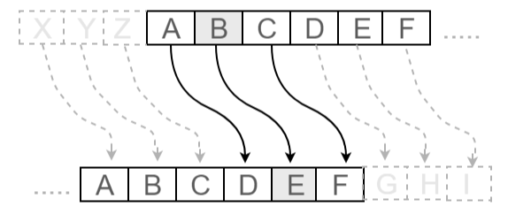
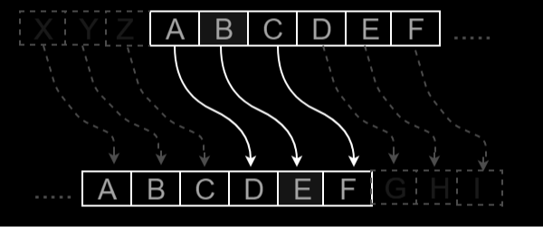
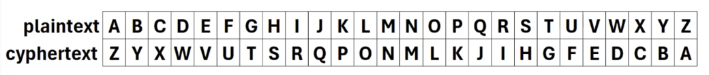
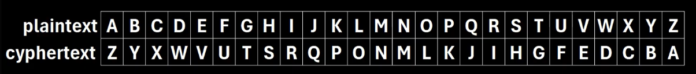

Cipher Lab
Choose whether to cipher or decipher your text.
Let's Cipher!
Enter your text and choose a cipher method :
Your Ciphered Text Below :
Want to add another layer?
Your Layered Cipher Text Below :
Let's Decipher!
Enter your ciphered text and choose a decipher method :
Your Deciphered Text Below :
How It Works!
Basic information and guide on ciphering and deciphering:
Cipher
It is a method of transforming a text in order to conceal its meaning from plain sight.
Most method involves shifting letters from its order in the alphabet or the texts itself.
Cipher Methods
Known methods range from basics such as Caesar, Atbash, and Rail Fence Cipher to complex such as the Enigma Machine.
This program showcases the Caesar and Atbash Cipher Methods.
Caesar Cipher
A simple substitution cipher that shifts each letter in the plaintext by a fixed number of positions down the alphabet.
Typically, the number of shifts of the letter is 3.
Example : Letter "a" will shift 3 times from a(0), b(1) , c(2) , d(3).
Hence, Caesar Cipher (3) of "a" is "d".
In this program, the number of shifts will be manually assigned by the user (from 1-25).
Below is an image showing its process :
 Atbash Cipher
A simple cipher that replaces each letter with its opposite in the alphabet.
Example : Opposite of letter "c" (3rd letter) is "x" (3rd to the last letter).
Hence, Atbash Cipher of "c" is "x".
Below is an image showing its process :
 Layering
Not a formal term, but is used to describe an application of two or more ciphers in a text.
Basically, having a layer of ciphers makes deciphering harder by increasing the number of possible combinations.
This program will also offer its users the option to layer their ciphered texts.
Decipher
It is the process of converting a ciphered text back into its original form.
Typically done by reversing the process on how it was ciphered.
Decipher Methods
Generally, the method will depend on how the text was ciphered. So knowing how a text was ciphered is the key to deciphering it.
This program also covers Caesar and Atbash Decipher Methods.
In addition, a Brute Force Function was also added.
Deciphering Caesar
Assuming the user know it was ciphered by Caesar Method and also know the number of shifts that was used.
This can be deciphered by reversing the number of shift made to the text backwards.
Example : Caesar Cipher (3) was used to have a ciphered letter "d"
To decipher it , letter "d" will shift backwards 3 times from d(3) , c(2) , b(1) , a(0).
Hence the deciphered letter of "d" is "a".
Deciphering Atbash
Assuming the user know it was ciphered by Atbash Method.
This can easily be deciphered by applying the Atbash Method itself to the ciphered text.
Example : Atbash Cipher was used to have a ciphered letter "x"
To decipher it , determine the oppoiste of "x" (3rd to the last letter) in the alphabet. Which is "c" (3rd letter)
Hence, Atbash deciphered text of "x" is "c".
Brute Force
It's a method of deciphering by trying every possible key or combination until the correct one is found.
Usually done by a computer in a form of a computer program (like this one).
In a brute force attempt, let's say to a Caesar Cipher.
The program will try to decipher the text by doing all the 25 possible shifts in the alphabet.
Then gather the result and display it for the user to see.
The brute force method in this program allows user to brute force caesar cipher, atbash cipher, and even the combination of the two.